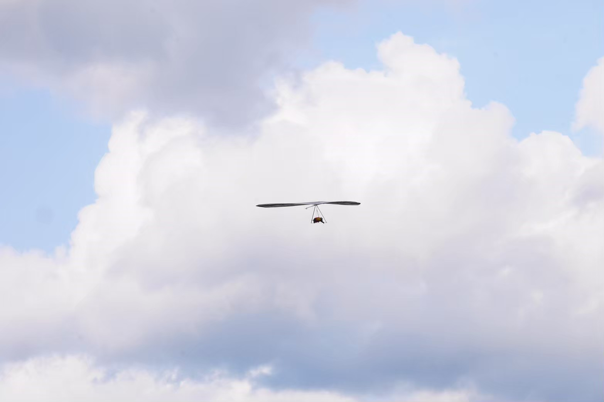
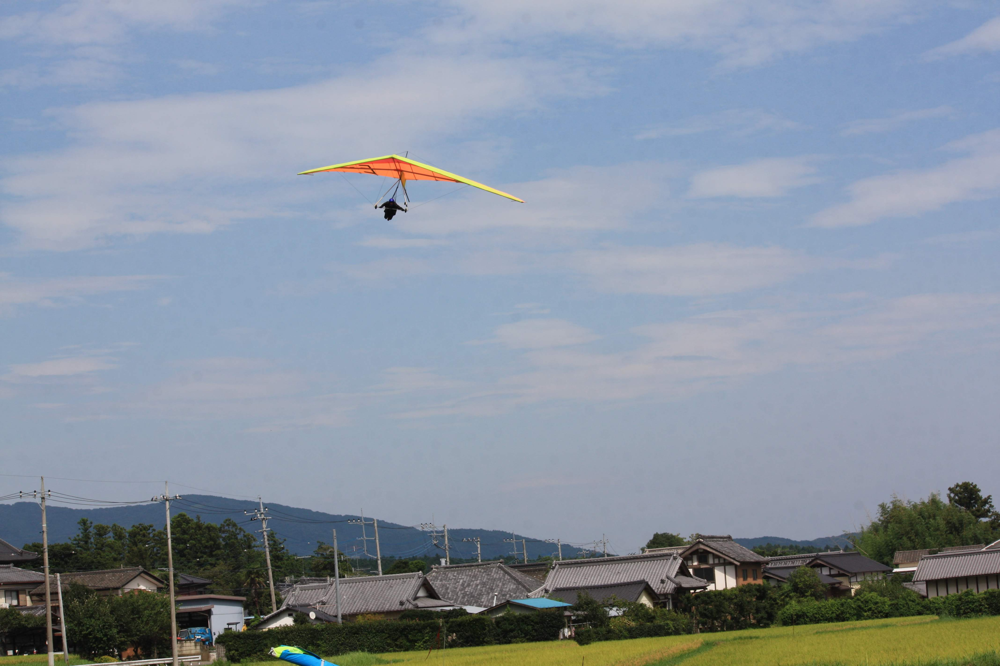

ハンググライダーとは

長さ10m、重さ20,30kgくらいで機体の中心からぶら下がり(hang)飛びます。
スピード、行きたい方向は自由に決められ、100km/hで飛ぶこともできます！
ぶら下がるだけなので力はいりません。そのため運動経験がなくても全く問題ないです！
空中で上昇気流を見つけて高度を上げて遠くに移動することができるのが一番の魅力です！
トンビと飛ぶこともできます！
似たスポーツにパラグライダー、グライダーがあります。
離陸

ハンググライダーでは山の中腹や山頂あたりの高度300~500mくらいのところから飛び立ちます。 斜面を走り離陸します。走ると言っても5、6歩なので走り出して気がついたら空中という 感じです。ハンググライダーの離陸は本当にかっこいいです！見学会にきてぜひ実際に 見て欲しいです！
着陸
上で書いたようにハンググライダーは自分で操縦できるので着陸場に向かい、そこに降ります。 基本的に休耕田で広いので安全に降りることができます。降りるときも走りますが、 離陸と同じく5、６歩です。飛行機の着陸をイメージしてもらうとわかりやすいかなと思います。